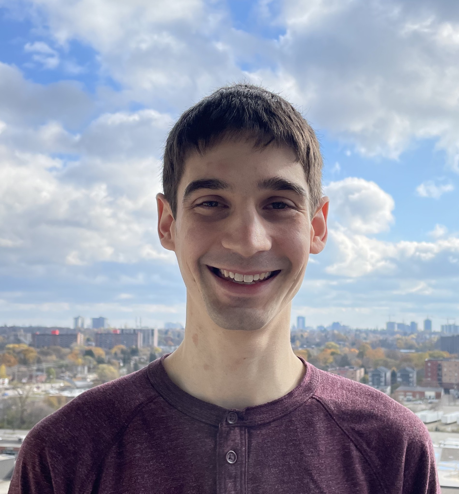

I am an Assistant Professor in the Computer Science and Engineering and Mathematics departments at the University of California, San Diego. My research is in quantum complexity theory. I am particularly interested in near-term quantum computing paradigms and proving that they exhibit some kind of quantum advantage over their classical counterparts.
Previously, I was a postdoc at the Institute for Quantum Computing at the University of Waterloo. I completed my PhD at MIT in Computer Science under the supervision of Scott Aaronson. I received a B.S. in Computer Science and Mathematics at the University of South Carolina.
Previously, I was a postdoc at the Institute for Quantum Computing at the University of Waterloo. I completed my PhD at MIT in Computer Science under the supervision of Scott Aaronson. I received a B.S. in Computer Science and Mathematics at the University of South Carolina.
Teaching
- CSE 105 - Theory of Computation, Spring 2023
- CSE 291/Math 277A - Quantum Complexity Theory, Fall 2022
Selected Research
-
Sample-optimal classical shadows for pure states
In general, to learn the output of a quantum experiment you might have to run it exponentially-many times. Fortunately, only certain features of your quantum state are important for many applications, and a popular quantum learning algorithm called
classical shadows
has emerged as a way to dramatically reduce the number of experiments. In this work, we show how to reduce this cost even more when you can assume the unknown quantum state is pure—a natural setting for a large range of quantum algorithms. - The Complexity of Bipartite Gaussian Boson Sampling (talk) BosonSampling is a popular proposal for a task that a quantum computer could easily solve that no classical device could efficiently simulate. In this work, we give a modified version of this proposal (BipartiteGBS) and prove that it can lead to classical intractability in regimes which are more suitable for near-term experiments than traditional BosonSampling.
- Interactive Shallow Clifford Circuits: Quantum Advantage Against NC^1 and Beyond (talk) Most proofs that quantum computers outperform classical computers are predicated on a number of conjectures. However, when comparing low-depth quantum circuits to low-depth classical circuits, a different story emerges—unconditional separations exist. In this line of work, we prove one of the largest-known separations of this type based on an interactive protocol with a particularly simple type of shallow quantum circuit.
Contact
email: dgrier@ucsd.eduoffice: CSE 4218